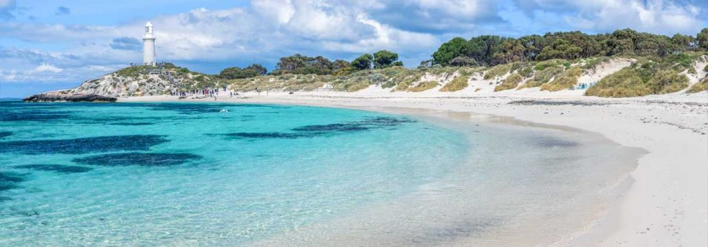

Until 2015, most people in the U.S. had never heard of the quokka, a cute mini- kangaroo looking animal with a perpetual smile. The quokka even hops like a kangaroo and has soft fur like a cat. These highly sociable and communicative animals gather into small family groups. The leader of a quokka group is the dominant male.
In 2015, people started taking selfies with this furry animal. And the quokkas selfies took off, as well as learning about this marsupial animal. Most quokkas live on an island off the coast of western Australia, on Rottnest Island. These social vegetarian animals hang out in groups, digging tunnels in the vegetation for napping and hiding.
There are as many as 12,000 quokkas on Rottnest Island. Due to habitat destruction, quokkas are not considered vulnerable to extinction. Now, more than 500,000 people visit the 7.3-square-mile Rottnest every year.
Quokkas have adapted nicely to the human invasion. They're not shy and they are skilled in raiding trash left behind for food. They also don't mind posing for selfies. They are known to approach people and frequent campsites to get free meals.
Their antics with each other, with some other animal species, and with human beings, have led many Australians to dub them the happiest animals in the world.
